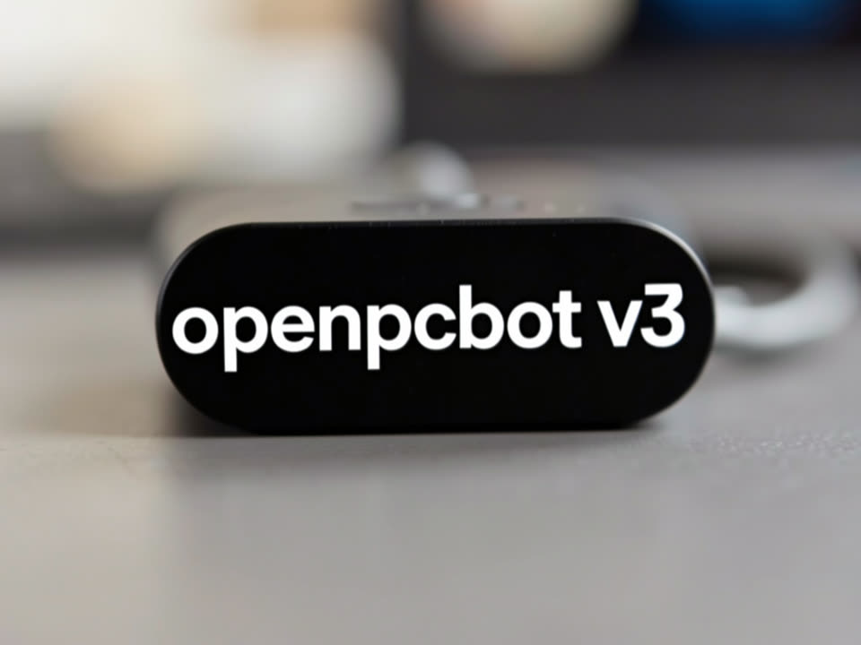

Fila durável em SQLite, gestor do Ollama com preflight de RAM, custo por chamada com orçamento e um cérebro que lembra em PT-BR. Roda ao lado do v2 até a paridade.

O v2 funciona, mas é um monólito sem fila, sem custo por chamada e sem gestão do Ollama, com dois travamentos por falta de RAM em agosto. O v3 pega o que já estava pronto e testado em outros repos locais e monta por camadas.
Claim atômico, lease com heartbeat, backoff, idempotência e drain gracioso, portados do inemaccbot com os 107 testes originais. Lanes por tipo de trabalho, um claude -p por vez.
Memórias com salience e decaimento, busca por FTS5 mais vetor bge-m3, consolidação noturna que detecta contradições e um vault curado que só grava com a sua aprovação.
Toda chamada de LLM passa por um único gateway: tier local → barato → premium, orçamento mensal com trava, e preflight que recusa carregar modelo grande sem 40 GB livres.
Canais só traduzem para um barramento de eventos. O orquestrador classifica com um modelo local pequeno antes de gastar qualquer token na nuvem.
Devolve JSON com rota, agente e tier. "direto" para conversa; "agente" quando precisa de arquivo, shell, repo, web ou skill.
Orçamento → provedor → preflight de RAM → chamada → custo em chamadas_llm. Ollama custa zero, mas conta tokens e tempo.
Job de agente roda claude -p --output-format json na lane agente. Resultado e custo real voltam ao chat de origem.
Cada turno vira memória. Fato durável gera proposta para MEMORY.md / USER.md; você aprova com um comando.
Tudo local. As API keys compartilhadas são lidas em runtime do .env do v2; o v3 só precisa do próprio token de bot.
Só HTTP na 11434. Nunca um ollama serve paralelo.
# modelos usados (mesmas tags do v2) ollama pull qwen3.8:27b ollama pull llama3.2 ollama pull bge-m3
O agente roda por subprocesso da CLI, não pelo SDK.
node -v # v20+ claude --version # CLI no PATH do usuário
Crie no BotFather. O token do v2 é recusado no boot (dois getUpdates = 409 e bot surdo).
# ~/projetos/openpcbotv3/.env TELEGRAM_BOT_TOKEN_V3=123456:AAH... PORT_V3=3142 PISO_RAM_GB=40
Cinco comandos. Sem token de Telegram o serviço sobe mesmo assim, com HTTP e CLI.
Copie o exemplo de .env e preencha só o que é do v3.
git clone git@github.com:inematds/openpcbotv3.git && cd openpcbotv3 npm install cp .env.exemplo .env # TELEGRAM_BOT_TOKEN_V3, PORT_V3, PISO_RAM_GB, ORCAMENTO_MENSAL_USD
Checa env, Ollama e modelos, RAM, CLIs, v2 ativo, unit e teto de memória. Não muda nada.
npm run doctor ✅ mesmo modelo geral que o v2 v2=qwen3.8:27b v3=qwen3.8:27b ✅ RAM 63.8 GB disponíveis · piso p/ carregar modelo grande: 40 GB ⚠️ TELEGRAM_BOT_TOKEN_V3 ausente — canal Telegram desligado
Snapshot com VACUUM INTO: o banco do v2 nunca é aberto para escrita. Idempotente.
npx tsx src/cli/importar.ts memórias do v2: lidas 308 · inseridas 291 · já existiam 17
Unit de usuário com Restart=on-failure, MemoryHigh=1.5G e MemoryMax=2G. O mesmo script serve para reiniciar depois de mudar src/ ou .env.
bash scripts/instalar-servico.sh # build + daemon-reload + enable + restart; sem sudo journalctl --user -u openpcbotv3 -f -o cat
No Telegram, ou por HTTP e CLI enquanto não há token.
npm run cli -- "/health" npm run cli -- "lembra que eu prefiro respostas curtas" npm run cli -- "no projeto X, conta as linhas de src/app.ts" # vira job de agente
Fila, custo, memória, tarefas e cron sem sair do Telegram. O dashboard fica em http://127.0.0.1:3142/.
/status [id] # fila por lane ou detalhe de um job /usage # custo hoje/semana/mês, por tier e agente, orçamento /health # Ollama, RAM, RSS, fila, heartbeat, canais /memoria lista|buscar|salvar|propostas|aprovar <id> /tarefa add amanhã 9h revisar PR # lembrete + resumo no /daily /cron lista · /ollama status · /consolidar · /novo
Trocas reais do dia em que o v3 subiu, com o v2 ativo na mesma máquina.
você> qual a capital do RS? e lembra que eu prefiro respostas curtas bot> Porto Alegre. bot> 📝 Guardar no vault? "…prefiro respostas curtas" → /memoria aprovar 1 você> o que eu te disse que prefiro? bot> Respostas curtas.
você> no projeto openpcbotv3, conta as linhas de src/fila/worker.ts bot> 🧠 lead — job #7. /status 7 acompanha. bot> 419 # chamadas_llm: claude-cli · sonnet · premium · US$ 0,1465 · 7,8 s # pico de memória do unit: 636 MB (teto 2 G)
/ollama preflight qwen3.6:35b-a3b ⛔ já há modelo grande residente (qwen3.8:27b) — política de 1 residente /ollama descarregar qwen3.8:27b ⛔ não foi carregado por este processo (pode ser do v2) — recusado
GET /health
{ "ok": true, "rss_mb": 82, "canais": ["telegram","http"],
"ram": { "disponivelGb": 35.3, "swapUsadoGb": 8.5 },
"ollama": { "online": true, "carregados": ["qwen3.8:27b"] },
"orcamento": { "pct": 0, "limite_usd": 50, "travado": false } }O v3 sobe com bot próprio ao lado do v2. Nada é apagado até a paridade: todos os comandos do v2 respondendo no v3, 7 dias sem job perdido, custo semanal medido.